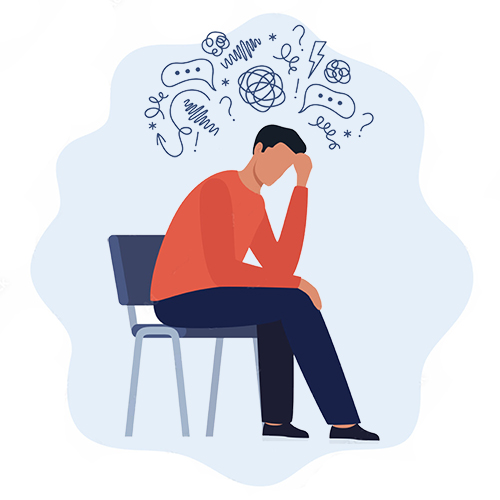

不安症とは

不安症はこころの障害のうちでも最も頻度の高いもので、一般的に人口の10%を超えるとも言われています。年齢的には、10代後半から40代までに発症するのが普通です。
神経症は、以前ノイローゼと言われ、しばしば精神病と混同される誤解があるようですが、「神経症は主に心理的原因によって生じる心身の機能障害の総称」であり、精神病とは異なります。
つまり、神経症は器質的な病気によるものではなく、健康な人が普段から体験するような心や身体に対する感覚や感情が、行き過ぎた状態とも言えるでしょう。
例えば、不潔なものを嫌悪する感情は誰にでもあるのですが、それが極端になって、「清潔」を保つために日に何度も手を洗ったり、何時間も入浴しないと気がすまない等、日常生活が大きく損なわれるような状態をいいます。
つまり、これらの人は神経症的な不潔恐怖症だと言われるのです。
社交不安症（対人恐怖）
大勢の前で話をしたり、初対面の人と合うと緊張したり、恥ずかしいと思ったりするのは日常的に誰もが経験する事です。しかしこのような状況や行為から生じる不安や緊張、身体の症状が、日常の会話や発言にまで支障をきたすほど著しくなり、そのような社会状況や行為を避けたくなってしまい、結果、学校や会社に行けない等、社会生活に支障が出てしまう状態です。
症状としては、いわゆる「対人恐怖」「赤面恐怖」「外出恐怖」等々、不安や緊張、身体的症状から人や社会との接触を避けるような状態が多いようです。
パニック症
パニック症は、パニック発作の反復を特徴とします。パニック発作は不安発作とも呼ばれ、「このまま死んでしまうのでは」「気を失って倒れてしまうのではないか」など強い不安や恐怖と共に、動悸、頻脈、胸痛、吐き気、発汗、めまい、呼吸困難など種々の自律神経症状が突然出現し、その状態が数分程度で最高潮に達し、3～5分ほどで消失します。
症状が急激なため病気ではないかと、しばしば病院に駆け込むのですが、たいていの場合、着いた頃には症状はひとりでに消失します。
全般不安症
何かひとつのことではなく、さまざまなことについて次々に過度な緊張や不安を感じる状態をいいます。不安を抱く対象は、仕事や職場、家族に対する責任、健康、安全、家事などに対する不安など広範囲にわたり、時間と共に変化していきます。睡眠障害や動悸、疲れやすさ、頭痛などの身体的症状が生じることがあります。
強迫症（強迫神経症）
反復する強迫観念や強迫行為を主な症状とし、昔からある神経症の代表的な類型のひとつです。強迫観念とは、心に繰り返し浮かぶ不快な考えやイメージで、本人はそれが無意味であるか、又は過剰であるとわかっていてもそれを打ち消す事ができず、せきたてられるのが特徴です。内容としては、過失や不潔に対する恐れ、他人や自分に危害を加える恐れなどが多く見受けられます。
身体症状症
身体的な症状で苦痛を感じ、日常生活に不都合が生じ、過剰な不安や恐怖感を抱いている状態です。検査を行い、原因や病気が見つからない場合に診断されます。本人は精神的なものだという自覚がないのが特徴です。
慢性疼痛といわれる、実際には体に気質的な痛みの原因の基盤がないのに頑固な痛みが持続するのが特徴の持続性身体表現性疼痛障害もここに含まれます。
また、身体表現性自律神経機能不全と言われる自律神経のある系統に限ったところに気質的な問題があるかのようにして起こるもので、自律神経失調症と言われているような症状です。これには心臓神経症、胃腸神経症、過敏性腸症候群、心因性の咳きや頻尿など色々なものが含まれます。
病気不安症（心気障害）
重い病気にかかっているのではないかと思い込むものをいいます。検査を行っても正常と言われても病気の不安が続くのが特徴です。
医学的疾患に影響する心理的要因
すでにかかっている病気が、心理的要因で、悪化したり、回復が遅れたりする状態を言います。たとえば、糖尿病、高血圧、アレルギー性疾患、心疾患、更年期障害などの病気に悪影響を及ぼすことがあります。
解離症（解離性障害）
解離症は、以前はヒステリーと呼ばれていました。女性特有の病気と考えられていました。しかし、男性にも起こることがあり、現在ではこの病名は用いられていません。
解離とは、自分から意識や記憶、感覚が離れた状態をいいます。解決できないほどの深い心的外傷から、自分のこころを守るための一種の防衛反応ともいわれています。
離人感・現実感消失症（離人症）
離人感・現実感の消失、またはその両方が持続的、反復的な体験をする疾患です。離人感とは、自分の思考、感情、感覚、身体、行為について、非現実感や親しみのなさを特徴とします。また、自分が自分から離れて、傍観者のように感じる体験をする場合もあります。
現実感消失とは、非現実感、または外界からの親しみのなさを特徴とします。周囲の環境を生命のないように感じたり、視覚的に歪んで体験される場合があります。ただし、離人感・現実感消失では、現実的な判断をしていくことは、保たれています。
うつ病／双極性障害（気分障害）
これまで、気分障害とされてきたうつ病および双極性障害が、近年、それぞれが別の疾患として分けられるようになりました。それぞれの特徴を見ていきましょう。
1）うつ病（大うつ病性障害）とは
「憂うつである」「気分が落ち込む」ことなどを抑うつ気分といい、うつ状態とは抑うつ気分が強い状態のことをいいます。うつ状態の中で、気分だけでなく考えのまとまりにくさ、や意欲減退、睡眠障害、食欲不振、倦怠感、頭痛などといった症状が現れ、そのような状態が、しばらくの間（2週間以上）、持続するものをうつ病と呼びます。
正常な人でも折に触れて憂うつ気分を感じるものですが、こうした気分の揺れは、気分転換をはかったり、自然と忘れたりして、やがて通常の気分に戻っていきます。
この気分の上下変動が強くあらわれるのがうつ病と考えがちですが、病的なうつ病は実は別物です。落ち込むできごとがなくても発症し、うれしいことが契機でも発症することがあります。
うつ病には、身体の症状が伴うことがあります。息苦しい、めまいがする、眠れないといった原因不明の不調で受診すると、うつ病だったということもあります。
うつ病は、まだ原因ははっきりしません。ストレスや過労だけでなく、遺伝体質的なものという説もあり、性格や心の負担になる状況、脳の神経伝達物質の異常など、いろいろな原因が絡み合っています。
2）双極性障害（躁うつ病）
双極性障害（躁うつ病）は、考える速度が速くなる、爽快な気分、意欲の亢進、睡眠時間が短くなる、性欲の亢進などの躁状態と抑うつ状態を繰り返す疾患です。双極性障害は、さらに双極性Ⅰ型（明確な躁状態があるもの）、双極性Ⅱ型（躁状態が1回以上あり、抑うつ症状が現れることも1回以上あるもの）、気分循環性障害（明らかな躁状態とはいえない気分の高揚と、ごく軽い抑うつ状態を2年以上繰り返すもの）というタイプに分けられます。
双極性障害（躁うつ病）の病因は、何らかの遺伝子が関与していることが双生児研究や家族研究から示唆されています。双極性障害（躁うつ病）は、気分の周期的な揺れを引き起こす遺伝的要因が関与していて、環境的なストレッサーに反応して発症するという考えが一般的です。
うつ病/双極性障害（気分障害）は、その原因ははっきりわかりませんが、発症のしやすさにある程度の遺伝的影響があり、双極性障害（躁うつ病）の方にその影響が強いようです。
またうつ病/双極性障害（気分障害）は、病気になりやすい性格やきっかけになりやすい状況があります。
■うつ病/双極性障害（気分障害）になりやすい性格
★循環気質（明朗、社交的、世話好き、同調的な性格傾向など）
★執着気質（几帳面、凝り性、徹底的、正義感、責任感の強い人等）
★メランコリー親和型性格（几帳面、秩序愛好、他人配慮的な性格等）
■発症のきっかけ、状況
★転勤、転職、異動、昇進、退職、出産、転居、子供の独立、死別、離別など
生活や仕事、家庭などの環境が大きく変化するような状況 ・・・等
＜うつ病の症状＞
- 集中力、決断力の低下
- 悲観的、自責的、無価値感
- 憂うつな気分、悲しい、無力感、不安感
- 意欲の低下、おっくう、口数が減る、ひきこもりがち
- 不眠（夜中や早朝に目が覚めやすい）
- 食欲や性欲の低下
- 頭痛、肩こり、口の乾き、胃の不快感、全身倦怠感、便秘、疲れやすさ
＜躁病の症状＞
- 自尊心の拡大
- さして親しくない人にも次々に話す等、普段よりおしゃべりになり大声で話す。
- 金遣いが荒くなる
- 考えがどんどん浮かんでくる
- 行動範囲が広く活発になり、抑制がきかなくなる。
- あまり眠らなくても苦にならない
- 食欲や性欲が昂進する 注意力が散漫になる解離性障害
- 悲観的、自責的、無価値感
気分変調症（抑うつ神経症）
不安や恐怖など一般的な神経質症状と共に、憂鬱な気分や心が晴れないなどの軽いうつ状態が続きます。最近では、うつ病との違いを、うつの程度と持続期間によって区分され、気分変調症（抑うつ神経症）は、「二年以上に及ぶ慢性の軽うつ状態を示す」状態を呼びます。気分変調症の場合には、うつ病の患者に比べ、一般的に病識は保たれている反面、神経質的な性格から心理的な葛藤が生じやすい傾向を持ち合わせている場合が多いようです。
また近年、神経症の人が、うつ病になる合併率も少なくない事が明らかになってきています。
非定型うつ病／産後うつ病／季節性感情障害
非定型うつ病は、過食や過眠を伴うのが特徴で、独特の身体のだるさが強く、状況によって気分の変動が多少ある場合もあります。対人関係などに過敏に反応するため社会的支障が出やすいのが特徴です。
女性が出産してから1ヶ月から6ヶ月くらいまでに起こるうつ状態は、産後うつ病と言われ、育児ノイローゼと呼ばれるものは、この産後うつ病である場合が多いようです。
季節性感情障害は、冬季うつ病とも言われ、日照時間が短くなり生理的リズムが障害を受けることにより発症し、それがうつ病に帰結すると言われています。
変換症（転換性障害）
原因がないのに、手足のまひや脱力、けいれんなどが起きたり、視覚や聴覚が失われたり、嚥下困難、失声などの神経系の病気に似た症状があらわれる状態をいいます。ストレスや精神的葛藤など、心理的な要因によって起こるものですが、心理的な要因が明らかでない場合もあります。
発達障害
生まれつきの脳機能の障害によって現れる認知と行動の偏りが著しいために、社会的不適応を起こしている状態をいいます。
発達障害には、「自閉症スペクトラム」「ADHD（注意欠如・多動性障害）」「学習障害（ＬＤ）」などがあり、現れる特性や困難も、その種類によって異なります。障害の現れ方も個人差が大きく、その時の年齢やおかれた環境により目立った困難が変化することもあります。
＜発達障害の主な種類と特徴＞
- 自閉症スペクトラム・・「社会性の障害」「強いこだわり」といった2つの特徴と、感覚過敏や感覚麻痺がみられ、知的障害のある自閉症から、知的レベルの高いアスペルガー症候群まで含みます。
- ADHD（注意欠如・多動性障害）・・「不注意」「多動性」「衝動性」の3つの特性があります。落ち着きがなく、注意力が散漫で、思慮のない行動をとってしまいやすい。
- 学習障害（LD）・・「読む」「書く」「計算する」などの学習のうち、特定の領域の学習とスキルの使用に著しい困難を示します（ひとつでも複数でも）。
トラウマ
実際に危うく死ぬ、重傷を負う、性的暴行を受けるなどの心的外傷（トラウマ）といった出来事に遭遇した後に、心理的、身体的に特有な症状が生じる状態を心的外傷後ストレス障害（PTSD）といいます。
症状としては、①外傷的出来事をくり返し思い出したり、夢に見たり、それが起こっているかのように感じたり、行動したりする侵入症状（フラッシュバック）。②外傷的出来事に関する人や場所、活動、思考や感情を避け、避ける努力をする回避症状。③外傷的出来事の重要な部分を想起出来なかったり、自分や他者、世界に対する否定的な信念や否定的な感情を持続的に体験したり、肯定的な感情を持続的に体験できない、認知や気分の否定的変化。④いらだちや激しい怒りを示したり、自己破壊的な行動をとったり、集中困難、入眠・睡眠困難になるといった過覚醒症状の4つがあります。
症状の持続期間が1か月以上あることが、PTSDの診断基準になります。また、心的外傷的出来事に遭遇してから3日～1か月以内に症状がでるのを急性ストレス障害（ASD）と言います。